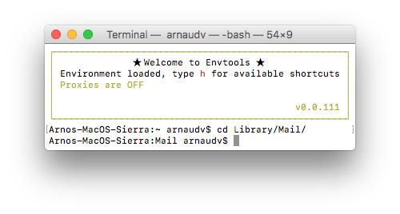
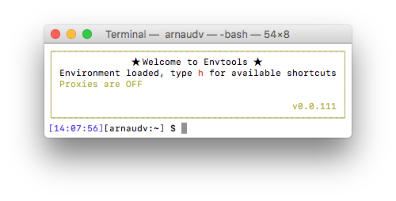

Introduction
Envtools is a command line helper for framework developers.
Its primary goal is to simplify the tedious task of initializing a laptop for a framework developer. Many tools need to be installed, proxy and shell environments need to be configured. One mistake and hours are wasted trying to figure out what is wrong when a simple automation could have saved everybody's time.
Not only Envtools will setup a framework developer environment in no time, it also comes loaded with goodies (bash aliases, fixes for the OS, Atom Plugins, etc.).
Commands
auto
envtools autoUse this command to bootstrap your environment automatically.
This command should rarely be used. Its goal is to set up and initialize a working environment for your terminal sessions. This is a step-by-step process (see the opposite option: manual) where all the available bootstrap options are being executed one after the other. It allows you to load useful aliases, set your proxy, setup your git and npm configurations, install most packages needed to build the framework and even check if you eventually have all that is required to run a build.
manual
envtools manualBootstrap your environment manually.
This command allows you to choose which step to run manually. It offers the same steps that are being executed with envtools auto, but with the flexibility to choose which one you need. It's most useful for an environment that has been bootstrapped before, but needs to be reconfigured one way or another after a while (fix user permissions, re-install core node packages, etc.)
extra
envtools extraInstall and configure some extra goodies that are not included in the manual/automatic bootstrap routines.
- Configure npm to use Sinopia.
- Install some Atom core packages.
- Install some QuickLook plugins. For example in the Finder, pressing on the SPACE bar when selecting a .zip or .pkg file would open a tree preview of the content of the packages... You need this.
- Fix Mac screensaver files permissions. If you are changing your screensaver settings and realize that after a while, they are reset to the previous values, you need this fix.
- More goodies are added regularly...
Aliases
Folder Navigation/Listing
| Alias | Description |
|---|---|
.. | Equivalent to cd .. |
desk | Equivalent to cd ~/Desktop |
down | Equivalent to cd ~/Download |
la | Enhanced ls to list dot files (hidden files), sorted by oldest on top. |
ld | Directories are listed as plain files (not searched recursively). |
ll | List in long format unsorted. A total sum for all the file sizes is output on a line before the long listing. |
lrt | List in long format sorted alphabetically and the most recent first. |
Files/folders Search/Diff
| Alias | Description |
|---|---|
axdiff | Performs a diff using Araxis Merge. Takes 2 arguments (folders or files). |
diffd | Performs a folder diff using plain bash diff. Takes 2 arguments (folders only). |
ksdiff | Performs a diff using Kaleidoscope. Takes 2 arguments (folders or files). |
ff | Find files or folders matching a pattern. Takes multiple arguments. See ff -h for options. |
fgrs | Find a string in files. Takes multiple arguments. See fgrs -h for options. |
tailf | Displays the content of a file and updates automatically if the content changes. Takes a file as an argument. Equivalent to tail -f. |
Mac Specific
| Alias | Description |
|---|---|
f | Open the Finder for the current folder. If an argument is passed, it tries to open that file with the corresponding Application (for folders, Finder is used). |
fix | Fix the 'Open With' shortcut in Finder. It removes duplicate entries. |
fixIcons | Fix the icons associated with opening Applications in Finder. |
kjamf | Kill any running processes with "jamf" in their name (Provisioning Software). |
klync | Kill any running processes with "lync" in their name (Microsoft Lync). |
knot | Kill any running processes with "symdaemon" in their name (Norton Antivirus). |
kout | Kill any running processes with "outlook" in their name (Microsoft Outlook). |
mate | Open Sublime Text 3. If an existing Sublime is opened, it will be used. If an argument is passed, it will load that file/folder. If not, it will be blank. |
maten | Same as mate but will open a new Sublime Text Window instead of re-using one. |
net | List opened connections matching the address passed in argument. net TCP will list all opened IP connections. |
openc | Open a file in Google Chrome. |
psf | List running processes matching the string passed in argument, e.g. psf node will list all running node processes. |
vm | VirtualBox Manager. Allows you to start/stop and list all installed VirtualBox appliances. |
hdd | Test and return the read/write capabilities of the current disk. |
Proxy Helpers
| Alias | Description |
|---|---|
pon | If a proxy is known (see envtools auto), it will be turned ON (in env, in git configuration, in npm configuration and in sublime configuration - if any). |
poff | If a proxy is known (see envtools auto), it will be turned OFF (in env, in git configuration, in npm configuration and in sublime configuration - if any). |
pq | Displays the current status of the proxy (ON, OFF or N/A). |
son | If sinopia is installed, this command will configure npm to use your local sinopia database instead of the official registry. Make sure sinopia is running after you execute this command. |
soff | This command will deactivate sinopia and revert npm configuration to either use a proxy if you have one, or plain old direct link to registry.npmjs.org |
sq | Checks if npm is using sinopia or not. |
Environment Helpers
| Alias | Description |
|---|---|
r | Shortcut to reload your environment without having to restart your terminal. |
sds | Shortcut for sudo su - |
web | Starts a small web server on port 8080, serving files in the current folder. Use --port to specify another port. |
Misc Helpers
| Alias | Description |
|---|---|
c | Clear the current terminal screen. |
ccc | Run compass clean && compass compile in the current folder. |
Customization
If you need customization, your can drop 3 bash files that will be loaded for each sessions. Those files HAVE to be put in the folder ~/.envtools/custom/ and their names HAVE to be functions.sh, aliases.sh and exports.sh.
These files do not exist by default so you have to create them yourself. They will be loaded one by one by Envtools in the following order: functions, aliases then exports. The naming is just a convention to organize your code, but if you wanted to, you can be sloppy and just create one file (with one of the names mentioned) and load all your custom code there.
Example
Overwriting the Envtools Command Line Prompt
On Mac, the default Bash command line prompt is limited. It shows the machine name, followed by a colon, the current folder, a space and the name of the current user.
Envtools enhances the command prompt with color and customization (it is enabled by default if you run the envtools auto mode and you can enable or disable it via the envtools extra mode).
Aww, that's better! Now you can clearly see the state of your proxy, the folder is color coded and your username and machine name have been removed because really, who cares.
Of course, this is one way of customizing the command prompt. What if you prefer to see more of the path? Or you still want the username, or for crying out loud, changing the color theme? This is where customization comes in.
Here is a step-by-step instruction on how to customize your own command prompt.
Step 1
Let's create the file ~/.envtools/custom/exports.sh and add the following line: echo "Hello World". Reload your terminal and you should see something like this:
Great! We have our first customization :) You can see that the prompt still displays the proxy status - so the default prompt is still there, we are just augmenting it.
Step 2
Let's remove this line and use one of the Envtools API function: setCommandPromptWithGit
# Calling public Envtools Bash API 'setCommandPromptWithGit'
# This method takes 2 optional parameters to customize the
# command line prompt, along with git information if any.
# arg1: what will be displayed first on the prompt, before any git info.
# arg2: what will be displayed at the end of the prompt, after any git info.
setCommandPromptWithGit "[\t][\u:\w]" "\$ "
Reload your terminal and see the timestamp (keyword \t) has been added at the beginning. Please check the following page for all available keywords.
Step 3
Let's add some color to that sad custom prompt. You can use pre-defined colors available at no charge to you from Envtools or you can use the ASCII codes listed here. The colors provided by Envtools are $COLOR_RED, $COLOR_GREEN, $COLOR_CYAN, $COLOR_BLUE, $COLOR_YELLOW and $COLOR_DEFAULT - to reset any other color.
Let's use $COLOR_BLUE to spice up the timestamp part of our custom prompt:
setCommandPromptWithGit "${COLOR_BLUE}[\t]${COLOR_DEFAULT}[\u:\w]" "\$ "
That's all folks! Enjoy Envtools and don't hesitate to report any bugs or feature requests!
Sinopia
Introduction
Sinopia is a private/caching npm repository server. It allows you to have a local npm registry with zero configuration. You don't have to install and replicate an entire database. Sinopia keeps its own small database and, if a package doesn't exist there, it asks npmjs.org for it keeping only those packages you use.
Use case
The main use case for framework developers is when we are working on node 6+ and are located behind a proxy. There is a known issue with npm that renders installations painfully slow. A workaround is to use Sinopia because it caches npmjs calls, therefore avoiding a call outside through the proxy.
How it works
Once Sinopia is installed and running on your machine, npm has to be configured to use it instead of the standard npmjs.org repository. At this point any npmcommands will first check if a required package and its dependencies are available in the Sinopia cache. If the check is unsuccessful, the command will then try to fetch the packages from npmjs.org and cache them for future use.
Installation
Installing Sinopia
Sinopia is a node package. Because there is a good chance that you are using node 6+ and are located behind a proxy (why would you still be reading this otherwise?), installing Sinopia may take a while. If you can temporarily disconnect from the proxy, go for it...
Installing Sinopia is as simple as typing the following command:
npm install -g sinopia
Starting Sinopia
This is the easy part. Just open a terminal and type sinopia... Just don't close that terminal window, and remember that you have to manually re-start Sinopia if you restart your machine.
Configuring npm to use Sinopia
You can use Envtools to configure npm to use Sinopia for you. The command is available in the "extra" section of Envtools. Type envtools extra and select the Sinopia section. On the next screen, choose to enable Sinopia. You should see something close to this:
That's it! Npm is now configured to use Sinopia, whether or not you are using proxies. You can now easily turn it ON or OFF with the following aliases: son and soff.
History
0.0.128 / 2016-09-05
- Do not display sinopia running state if not on Mac
- Fixing unicode prompt issue on non-mac
- Allowing to load 2 different custom prompt preset
- Fixing reloading env broken when no prompt are set
- Refactoring common
- Oops, only load custom prompt if the user asked for it
0.0.127 / 2016-09-05
- Fixing Sinopia running sign color
- Updating customization help page a little bit
- Typo
- Better PROMPT_COMMAND - ready for more customizations
- Adding hidden query string option to help page for debug
- Fixing npm badge display in history page
0.0.126 / 2016-09-04
- Enabling sinopia configuration (envtools extra) for Windows
0.0.125 / 2016-09-04
- Hiding mac only help on non-mac browsers
0.0.124 / 2016-09-03
- Adding npm badge to help file
- Removed markdown dependency on building aliases help page
0.0.123 / 2016-09-02
- Adding a lot more about Sinopia and Node v6
0.0.122 / 2016-09-02
- Merge remote-tracking branch 'origin/master' into npm-node-sinopia
- Fixing prompt cutting of after a big amount of key strokes
- Merge remote-tracking branch 'origin/master' into npm-node-sinopia
- Adding short logs (feedback text) for each command
- wip on re-writting help pages
- removing debug code
- wip
- wip
- wip node vs proxy
- Removing phantomjs installation - not required anymore
0.0.121 / 2016-08-31
- Fix for git boostrap when there is no config at all
0.0.120 / 2016-08-31
- Better session reloading mechanism
- Remove duplicate warning logs
- Refactoring to simplify some tasks
- Adding testing CLI to envtools
0.0.119 / 2016-08-26
- Fix login prompt not remembering previous location
- Log error when homebrew installation of wget fails
- Migrating to lodash and replacing mkdirp with ensureDir
0.0.118 / 2016-08-25
- Optimizing sinopia (better external usage)
- Bump download dependency version
- Bump dev dependencies
- No need to remove “progress” for npm (fixed perf at master)
- Better README
- Simplifying "envtools -h" since the web page is now supported
0.0.117 / 2016-08-21
- Refactoring help page (available for Windows too)
0.0.116 / 2016-08-21
- Refactoring maven settings installation
0.0.115 / 2016-08-20
- Removing git link from history since it’s a private repo
- Slight better wording for manual options
- Slight refactor of “checkForApps” - better logging
- Slight refactor of load.sh
0.0.114 / 2016-08-17
- Bumping maven version to 3.3.9 since it's now supported
0.0.113 / 2016-08-08
- Removing getArtifacts - not needed anymore
- Spelling!
0.0.112 / 2016-08-07
- Adding example to customization tab
- Fix lint issues in Gruntfile
0.0.110 / 2016-08-06
- Better wording for the command prompt option
- eslint rules: adding es6 support
- eslint rules: allowing template litterals
0.0.108 / 2016-06-17
- Updating gith because of an API change in fedtools-utilities
0.0.107 / 2016-06-15
- Small refactoring
0.0.106 / 2016-06-14
- In extra mode, allowing the user to choose which atom packages to install
- In manual mode, allowing the user to choose which npm packages to install
0.0.105 / 2016-06-10
- Better handling of npm installationg failure
0.0.104 / 2016-06-10
- Fixing homebrew installing - need to run update now
0.0.103 / 2016-06-10
- Refactoring - extracting each individual plugin
0.0.102 / 2016-06-09
- Special character is not working on windows
0.0.101 / 2016-06-08
- Do not check for ruby in auto mode on windows
- Lowering ulimit for windows
0.0.100 / 2016-06-08
- Better welcome banner for non-mac
0.0.99 / 2016-06-08
- Limiting 'h' for help on mac
0.0.98 / 2016-06-08
- Adding alias for clear (c)
- no sudo on windows - take 2
0.0.97 / 2016-06-07
- Removing stars in banner on Windows
- Merge branch 'master' of https://github.com/aversini/envtools
- No sudo on windows
0.0.96 / 2016-06-07
- Replacing "cp -f" with fs.copy
- Merge branch 'master' of https://github.com/aversini/envtools
- Merge branch 'master' of https://github.com/aversini/envtools
- Merge branch 'master' of https://github.com/aversini/envtools
- First pass at trying to support windows
- First pass at trying to support windows
- (internal) Adding sugar shell method "confirm"
0.0.95 / 2016-05-24
- Adding gulp to needed npm packages
0.0.94 / 2016-05-19
- Updating npm bootstrap to take sinopia into account (if already setup)
0.0.93 / 2016-05-13
- Fix envtools message display in node v6+
0.0.92 / 2016-05-05
- Restricting phantomjs installation to 1.9.8
0.0.91 / 2016-05-01
- Slightly better help (for sinopia shortcuts)
- Need to reload env when setting sinopia (on or off)
- Reload custom export when reloading prompt (for ex via pq or sq)
0.0.90 / 2016-04-30
- Adding more sinopia goodies
0.0.89 / 2016-04-29
- Removing gemnasium from README
0.0.88 / 2016-04-29
- Tiny update to trigger a bump - failing to publish because of... sinopia :)
0.0.85 / 2016-04-29
- Fix package dev dependencies
- Removing time-grunt
- Adding Sinopia to handle npm caching locally
- update .jsbeautifyrc to add a new line at the end of files
- Fix invalid fs-extra dep version
- Update to latest stable version of inquirer (migrating to promises)
- Adding license to package.json to prevent CLI warning
- Updating to latest stable version of glob
- Updating to latest stable version of fs-extra
0.0.84 / 2016-04-27
- Enabling by-passing a few steps in "envtools auto"
- Sorting Vms
0.0.83 / 2016-04-27
- Linting via ESLint
- Adding unicorn as a required App for framework
0.0.82 / 2016-04-26
- Updating ESLintrc to latest from framework
0.0.81 / 2016-04-25
- Updating ESLintrc
0.0.80 / 2016-04-21
- Try to limit grunt dependencies
- grunt-cli is enough, not need to install grunt as well
- Adding chai to globals for ESLint
0.0.79 / 2016-04-21
- Removing reserved words
- Revert "Removing fedtools installation from envtools"
- Removing grunt check
- Moving version checking to public package
- Removing submodule - not working..
- Not sure what I'm doing here..
- Adding submodule "versions"
0.0.78 / 2016-04-15
- Adding a few more Atom packages
0.0.77 / 2016-04-13
- Removing fedtools installation from envtools
0.0.76 / 2016-04-11
- Simplifying README
- Adding eslint and unicorn to default NPM packages
- Fix lint error
0.0.75 / 2016-02-17
- Dump the resume_auto file only in auto mode!
0.0.74 / 2016-02-12
- Updating
laalias to list only hidden files - Sligthly better help
0.0.73 / 2016-02-11
- Adding support for .bash_profile (on top of .profile)
- Relaxing eslint rule for style of wrap-iife functions
0.0.72 / 2016-02-08
- Removing App Store fix since it does not work...
0.0.71 / 2016-02-05
- Adding wget as the first real core package needed after brew
0.0.70 / 2016-02-05
- Add bash function
getArtifactsto get nexus artifacts quickly - Removing Atom package atomatigit (not working very well)
- Adding project-manager to the list of Atom packages to be installed
0.0.69 / 2016-02-04
- Adding alias to fix icon association in Finder
- Adding alias for testing HDD performance (hdd)
0.0.68 / 2016-02-03
- Oops, forgot vendor prefixes... who do I think I am..
0.0.67 / 2016-02-03
- Even better logo via SVG
0.0.66 / 2016-02-03
- Fixed header for the help page
- Adding default .jsbeautifyrc file
0.0.65 / 2016-02-03
- Ooops - fixing regression introduced by ESLint config - async.waterfall issue
0.0.64 / 2016-02-03
- Adding ESLint configuration to auto and manual
- Trying to fix Atom package installation
0.0.63 / 2016-02-02
- Refactoring
githto access better tags info and removing useless sugar (git status really?!?)
0.0.62 / 2016-02-02
- Adding 'new version available' to banner if there is one...
0.0.61 / 2016-02-02
- Adding isDirtyGit bash function to check if a local repo is clean
0.0.60 / 2016-02-01
- Fixing Araxis Merge
0.0.59 / 2016-02-01
- Reverting to Maven 3.2.5 (See PN-13533)
0.0.58 / 2016-02-01
- Removing heroku and status from gith
- Removing support for sublime proxy switch (was buggy)
- Renaming options.bootstrap into options.auto for consistency
- Adding 'svgo' to core npm packages and removing 'jshint'
0.0.57 / 2016-01-31
- Resuming envtools auto after first time env/proxy setup
0.0.56 / 2016-01-31
- Adding power charging sound
- Adding fix for Mac App Store
0.0.55 / 2016-01-31
- Adding atomatigit to atom package list
0.0.54 / 2016-01-31
- Removing wrong notification
0.0.53 / 2016-01-31
- Missing file in the final npm package
0.0.52 / 2016-01-31
- Removing test from publish since there are no tests... so far..
- No need to artificially bump bash version since it's now part of "release"
- Removing old file
0.0.51 / 2016-01-31
- Adding history to help file
- Better proxy fat finger filtering
- Better error/message on proxy setting
0.0.50 / 2016-01-30
- Better auto mode: do not ask for env or proxy if already set
0.0.49 / 2016-01-30
- Better centralized messaging
- Setting the proxy should not end the process
- Setting fancy banner and prompt for auto mode
0.0.48 / 2016-01-30
- Refactoring to handle auto/manual/extra requests more efficiently in the future
- More Atom packages
- Minifying help file
0.0.47 / 2016-01-29
- Adding more essential Atom packages
0.0.46 / 2016-01-29
- Ooops, missing banner setup during auto
0.0.45 / 2016-01-29
- Create runtime dir only if it doesnt exist (~/.envtools)
- Adding option to remove the welcome banner
- Adding http-proxy to Atom proxy helper
- Adding Atom packages
- Customization help - TBD
- Adding Atom to the help intro
0.0.44 / 2016-01-28
- Setting npm progess false by default (to speed up node v5+)
- Removing maven warning during bootstrap
0.0.43 / 2016-01-28
- Adding envtools web
0.0.42 / 2016-01-27
- Adding small blurb about
fedtools extrain the help file. - Renamed help.md into aliases.md (cleaner...)
- Updating git-ptompt to latest release
- Unused var
0.0.41 / 2016-01-27
- Slighty better README/help
- Fixing "version" alias
- If boring is passed, do not ask for the changelog
- displayProxy should also reset the env if status is known
0.0.40 / 2016-01-26
- Updating proxy setup for Atom
- Adding screensaver fix to extra options
- Hidden option for extra
- Fixing backup dir to just day hour min
0.0.39 / 2016-01-25
- Fix check version process and display
0.0.38 / 2016-01-25
- Display proxy should also update the prompt
0.0.37 / 2016-01-25
- workaround mkdirp async issue
0.0.36 / 2016-01-25
- Fixing quicklook plugins - remove only the ones that are going to be installed
- Starting to add extra goodies (quicklook this time)
0.0.35 / 2016-01-25
- Help: adding warning about node and java
0.0.34 / 2016-01-25
- Better help
0.0.33 / 2016-01-24
- Adding Envtools vesion to welcome banner
- Ignore error when setting proxy off and git config complains - it's ok
- Do not ask for Proxy confirmation if proxy is already set (in auto mode)
0.0.32 / 2016-01-24
- Wip on adding debug flag
- Bypassing maven check if we just installed it before...
- Installing Compass should be silent in auto mode
- Logging error message when failure to download maven
0.0.31 / 2016-01-24
- Adding .hushlogin to prevent nasty welcome banner
0.0.30 / 2016-01-24
- Allow banner to be disabled
- Still playing with the banner :)
0.0.29 / 2016-01-24
- Playing with the welcome banner...
0.0.28 / 2016-01-24
- Display welcome banner via node
- Better wording for ruby/compass installation
0.0.27 / 2016-01-24
- Fixing async installation of ruby/compass
0.0.26 / 2016-01-24
- Better wording for restarting session needs
0.0.25 / 2016-01-24
- Need to specifiy gem install dir (in case env is not setup yet)
0.0.24 / 2016-01-24
- Fixing brew installation (was not working since standard brew script is interactive)
- Default to yellow command prompt when ssh'ing
0.0.23 / 2016-01-24
- No async for array of commands..
- Adding shifter in core npm packages
0.0.22 / 2016-01-23
- Confirm Admin request for git only if not bootstrap mode
0.0.21 / 2016-01-23
- Set gem path via brew only if brew is installed
0.0.20 / 2016-01-23
- If .profile doesnt exist, create it
0.0.19 / 2016-01-23
- Refactoring the prompt code to allow easier overridde
- Moving custom functions/exports/aliases at the very end to make sure they can override anything
- Better proxy set/unset with environment auto reload if needed
0.0.18 / 2016-01-23
- Adding missing commit logs to npm package
0.0.17 / 2016-01-23
- Oops debug logs in prod..
0.0.16 / 2016-01-23
- Oops missing rimraf dep
0.0.15 / 2016-01-23
- Oops, forgot to change the path to custom functions
- Adding enabling/disabling command prompt
- ff ignores node_modules by default, but adding --rainbow to bypass
- Removing unused code
- Fixing typos in help file
0.0.14 / 2016-01-22
- Adding fedtools step
- Adding usr local chown + m2 settings
0.0.13 / 2016-01-21
- Fixing async issue with mkdirp - too tired to investigate :/
0.0.11 / 2016-01-21
- Adding Maven installation
- Adding aliases for desktop/download folders on mac
- Fixing invalid custom folder in help
- Fixing display banner for linux (no help here)
- Adding missing ccc alias
0.0.10 / 2016-01-21
- Adding alias for help in mac
- Updating alias for Sublime
- Generating help.html
- Man pages: adding extra bit about customization
- Better man pages
0.0.9 / 2016-01-20
- Fixing git bootstrap - forgot array of cmd would not be async...
0.0.8 / 2016-01-20
- Adding missing file at root level of npm package - not sure if this is going to work thouhg..
- Changing commands to 'auto' and 'manual' - makes more sense
- Better introduction + better verbiage on proxy
0.0.7 / 2016-01-20
- Better handling of proxy setting (before and after)
- Do not ask for admin access in bootstrap mode
0.0.6 / 2016-01-20
- Adding bash version file to grunt task
- Fixing envtools logo...
0.0.5 / 2016-01-20
- Fixing grunt tasks...
0.0.4 / 2016-01-20
- Adding shell folder to npm distro
0.0.3 / 2016-01-20
- bad json bad!
- posix package would not install on linux...